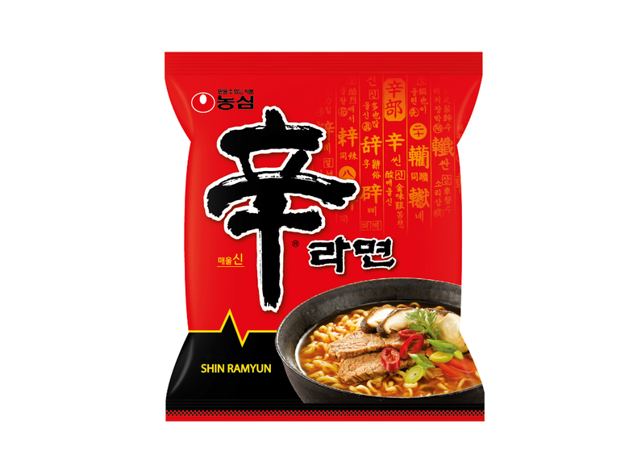

Ramyun

Enjoy a mouthwatering bowl of Ramyun! Don't forget to add rice afterwards!!
Ingredients
- Shin ramen
- bacon strips
- green onion
- water
- egg
- cheddar cheese
Steps
- In a pan, add the bacon strips and cook over medium-high heat for 1 minute or until they are almost cooked. If the bacon doesn't release enough oil, you can add a little bit of cooking oil.
- Once the bacon has released some oil, add the white part of the green onion and cook for an additional 30 seconds. Set the bacon and green onions aside.
- Return the pan to the heat and add 2 ½ cups of water. Bring it to a boil.
- Once the water is boiling, add the Shin Ramen noodles, dried vegetable packet, and 1 tbsp of the seasoning packet (adjust according to how spicy you want it).
- Cook the noodles for 4-5 minutes until they are fully cooked and tender.
- Lower the heat to low. Create a well in the center of the noodles and crack the egg into it. Place the cheese slice halves on both sides of the egg.
- Cover the pan with a lid and continue cooking for about 1-2 minutes or until the cheese has melted, and the egg whites are cooked. The yolk can be runny or cooked to your preference.
- Sprinkle the green part of the green onion.
- Serve the Shin Ramyun with the egg and cheese immediately while it's still hot.
Home